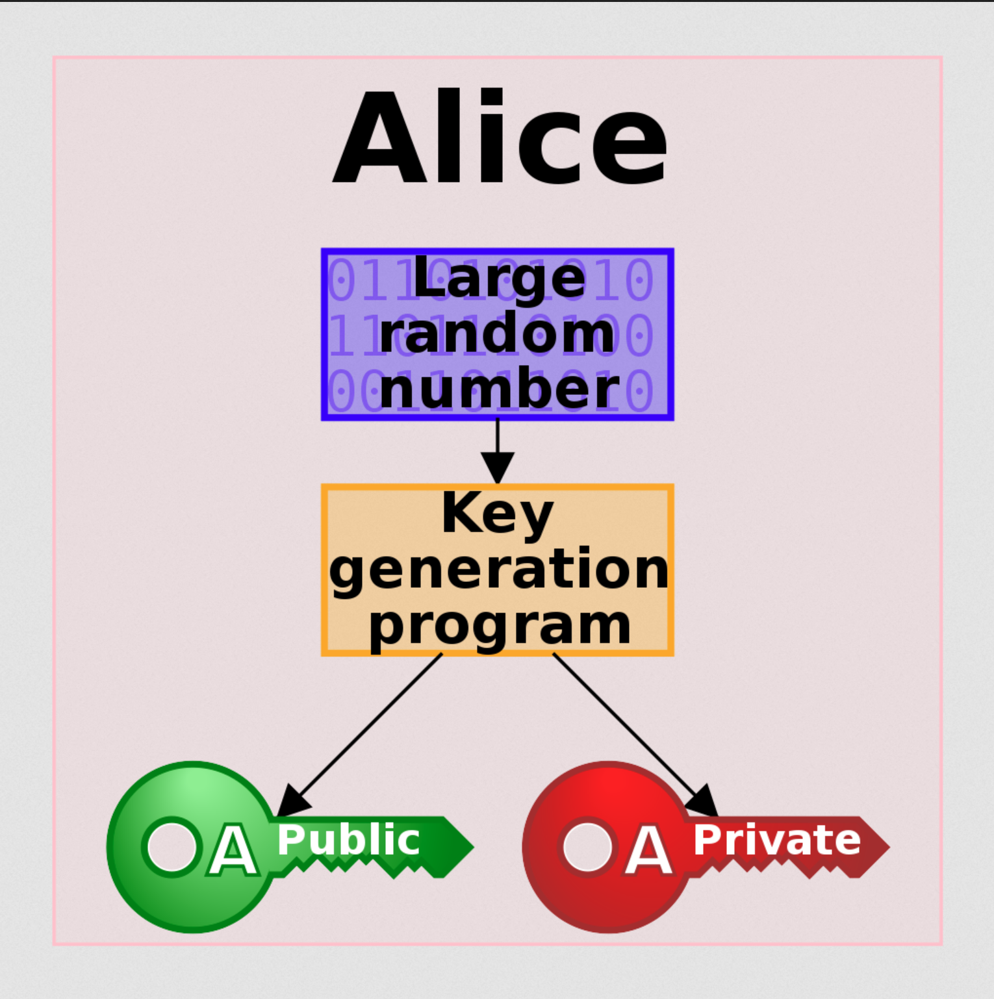
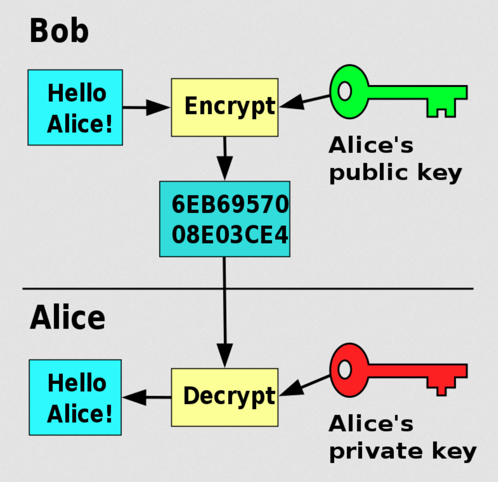

## Passkeys, FIDO2, Python, & You ### [Aaron Yong](https://aarony.dev) #### EdmontonPy Nov 2022
### Goal - Put passkeys on your radar - Simpler registration and sign-in flows - Provide information that's _mostly_ correct --- ### Background - **Not a security expert** - U of A 2014 CS grad - Polyglot dev (1st lang: Perl, newest: Dart) - Python'd for a few years (Django, FastAPI) - Some front-end (VueJS) - Mobile dev these days (Flutter)
### Discovery  <small> https://arstechnica.com/information-technology/2022/10/passkeys-microsoft-apple-and-googles-password-killer-are-finally-here/ </small> --- ### Web Demo - [Passkeys.io](https://www.passkeys.io) - [Basic Example](https://webauthnworks.github.io/FIDO2WebAuthnSeries/WebAuthnIntro/BasicExample.html) - [Basic Passwordless Example](https://webauthnworks.github.io/FIDO2WebAuthnSeries/WebAuthnIntro/PasswordlessExample.html)
### Benefits - Protection against phishing - Reduced impact of data breaches - Invulnerable to password attacks (Source: [MDN](https://developer.mozilla.org/en-US/docs/Web/API/Web_Authentication_API)) --- ### Isn't this 2016 tech? #### Yes. Sort of. - Waiting for client-side adoption - [May 2022](https://fidoalliance.org/apple-google-and-microsoft-commit-to-expanded-support-for-fido-standard-to-accelerate-availability-of-passwordless-sign-ins/): Apple, Google, Microsoft announce OS support --- ### Passkey Support As of Nov 2022:  (Source: [passkeys.io](https://passkeys.io)) Also: [Passkeys.dev Device Support](https://passkeys.dev/device-support/)
## Jargon tl;dr Edition --- ### FIDO & FIDO2 - **F**ast **ID**entity **O**nline, or [FIDO Alliance](https://fidoalliance.org/) - Consortium that develops authentication standards - **FIDO2**: Name for the passwordless auth protocol w/2 main specifications - Web Authentication (WebAuthn) API - Client to Authenticator Protocol (CTAP) - Misc. others --- ### WebAuthn & CTAP - **WebAuthn**: Browsed-based JS API for creation and handling of public key credentials - **CTAP**: Enables communication between an authenticator (phones, security keys) and client (e.g. browser) or platform (e.g. OS) - **CTAP2** is latest iteration, **CTAP2.1** in Draft --- ### Authenticators In FIDO2, there are 2 types - **Platform authenticator**: An authenticator that your OS provides, e.g., PIN, fingerprint, FaceID, Hello - **Security Key**: Physical device connecting via USB, NFC, or BLE (e.g., Yubikey) This talk focuses on **platform authenticators** --- ### Relying Party Usually a web server which is using FIDO authentication protocol. --- ### Grammar **Authentication with FIDO2** is more accurate than "Auth with WebAuthn". **Sign in with a passkey** is valid.
## How It Works ### (Kind of) --- ### Disclaimer I may have gotten some bits wrong. Not a security expert, so will welcome all feedback on this topic! --- ### Asymmetric Public Key Cryptography   Source: [Wikipedia](https://en.wikipedia.org/wiki/Public-key_cryptography) - Alice: technically a device - Bob: actually a web server --- ### Registration 1. User supplies a username. 1. Server sends unique challenge value to user's browser. 1. Browser begins to create a new public/private key pair. - Shows OS's options for user verification. 1. If verified, client sends public key and challenge back to server. 1. Server stores public key with user's ID and username. --- ### Authentication  Source: [dev.yubico](https://developers.yubico.com/WebAuthn/Libraries/Using_a_library.html) --- ### Flows Look Similar Yep. You get basic user registration and authentication, all in 1 flow! 🤯 --- ### Password Authentication  Source: [Ackermann Yuriy's WebAuthn Series](https://medium.com/webauthnworks/introduction-to-webauthn-api-5fd1fb46c285) --- ### Password-less Authn w/FIDO2  example.com enforces user verification on client's side Source: [Ackermann Yuriy's WebAuthn Series](https://medium.com/webauthnworks/introduction-to-webauthn-api-5fd1fb46c285)
## Libraries ### (aka "where's Python in all this?") <small>For the latest:</small> <small>https://github.com/herrjemand/awesome-webauthn</small> --- ### Client-side - Web: [WebAuthn JS API](https://developer.mozilla.org/en-US/docs/Web/API/Web_Authentication_API) - Android: [FIDO2 API for Native Apps](https://developers.google.com/identity/fido/android/native-apps) - iOS: [Apple docs on Supporting Passkeys](https://developer.apple.com/documentation/authenticationservices/public-private_key_authentication/supporting_passkeys) --- ### Server-side There are quite a few already, for example: - Python: [yubico/python-fido2](https://github.com/Yubico/python-fido2) - Python: [duo-labs/py_webauthn](https://github.com/duo-labs/py_webauthn) - C#/.NET: [FIDO2 for .NET](https://fido2-net-lib.passwordless.dev/) - Best tl;dr website imo - More: [awesome-webauthn repo](https://github.com/herrjemand/awesome-webauthn#server-libs)
## Python Flask Demo I forked Yubico's `python-fido2` repo: <small>https://github.com/ajyong/python-fido2/tree/platform-passwordless-flow</small> Hacked the example to allow PIN-based verification
## Limitations & Considerations --- ### FIDO2 Requires Secure Context - Web traffic must use HTTPS - Local demo used self-signed, good enough for local dev - If not on HTTPS train yet, it's time --- ### End User Reactions - We're creatures of habit - Lots of confusion, misinformation regarding authentication/security Will a user immediately trust FIDO2? It's almost _too simple_... 🤔 --- ### End User Transition May have to hold your nose and retain familiar sign-in methods in front of FIDO2. [passkeys.io](https://passkeys.io) uses email TOTP as a fallback in case user's device lacks CTAP capabilities.  Source: [Ackermann Yuriy's WebAuthn Series](https://medium.com/webauthnworks/introduction-to-webauthn-api-5fd1fb46c285) --- ### Usernameless Flow? - Technically possible, but CTAP2.0 has flaws being fixed in 2.1: - Brute-force a CTAP2.0 security key, check if user's been to a website - If authenticator is full, user forced to wipe entire device's stored creds - Client-side support is still in flux between OSes and browsers --- ### Attestation...? - tl;dr: server-side also stores the physical model of the authenticator - Lots of hoops just for that - Pain ensues for the devs - Ackermann Yuriy: [When you might need attestation](https://medium.com/webauthnworks/webauthn-fido2-demystifying-attestation-and-mds-efc3b3cb3651#4919) --- ### I Don't Trust You Nor should you! I'm not a security expert. However, if you trust public-key cryptography, e.g. SSH, passkeys rely on the same fundamentals. (Devs and companies basically figured out how to get everyday folks to "SSH") I encourage finding your own resources on FIDO2!
## Resources Ackermann Yuriy's [Webauthn and FIDO2 Series](https://medium.com/webauthnworks/webauthn-fido-series-content-page-4f9a187aa588): - [Intro to WebAuthn API and Passkey](https://medium.com/webauthnworks/introduction-to-webauthn-api-5fd1fb46c285) - [Demystifying attestation and MDS](https://medium.com/webauthnworks/webauthn-fido2-demystifying-attestation-and-mds-efc3b3cb3651) FIDO Alliance - https://fidoalliance.org/passkeys/ - From their own [Resources](https://fidoalliance.org/passkeys/#resources): - [Passkeys.dev](https://passkeys.dev/) - [Apple](https://developer.apple.com/passkeys/) - [Google](https://developers.google.com/identity/passkeys)
## Thank You ### Questions? Comments? - Slack: `@aaron.yong` - Website: https://aarony.dev - GitHub: https://github.com/ajyong